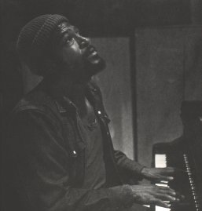
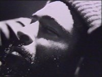
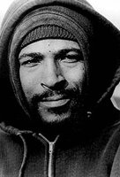

Além da biografia abaixo em português, existem mais duas outras biografias em inglês que podem ser lidas. Uma escrita por Chris Dykhouse e outra escrita por David Ritz, que já escreveu uma biografia sobre Marvin Gaye e é co-autor da música Sexual Healing.
“...Marvin Gaye foi um homem que viu o valor social de colocar nossa dor e sofrimento em música.” --Ice Cube sobre Marvin Gaye
Ele foi um dos maiores cantores e compositores de sua geração, um soul man natural cuja música esteve profundamente absorvida por nossa cultura.
Marvin Gaye, nascido em 2 de Abril de 1939, em uma família profundamente religiosa, ajudou a formar e remodelar o “Motown Sound” quando ainda jovem viajou para Chicago e depois para Detroit com Harvey Fuqua, o líder de Harvey and The Moonglows, um dos mais notáveis grupos de doo-wop da costa leste americana.
Marvin, junto com os Moonglows, primeiro gravou pela Chess Records em 1959 em Chicago. Posteriormente, Harvey, com Marvin no grupo, eventualmente iam a Detroit. Sob a tutela e ajuda de Berry Gordy, Jr., Marvin começou gravando pela Motown (1961, The Soulful Moods of Marvin Gaye).
Durante estes primeiros anos na Motown, Marvin se tornou parte da fábrica de sucessos da Motown, e produziu álbuns que o fizeram o artista mais popular e duradouro da gravadora..
Começando em 1963 com o álbum “That Stubborn Kinda Fella”, Marvin estava destinado ao estrelato. A canção, “Stubborn Kinda Of Fella”, rapidamente o estabeleceu como o mais importante vocalista da Motown.
Marvin começou a fazer músicas históricas desde o início. Embora ele quisesse se tornar o próximo Nat King Cole e entregar cheio de alma, baladas românticas, seu forte era cantando doo-wop e melodias populares atraentes. O começo dos anos 60 na Motown estavam atentos com o talento musical de Smokey Robinson, Eddie e Brian Holland, Lamont Dozier, Willam Stevenson e Norman Whitfield. Marvin, também, tornou-se parte desse grupo de escritores, cantores e produtores.
Então, em 1964, Marvin bate as paradas de sucesso novamente com álbum de dueto com Mary Wells “My Guy”, que se tornou o terceiro álbum Número Um da Motown. Junto com Marvin outras vocalistas femininas, como Kim Weston, Tammi Terrell e Diana Ross, tiveram um enorme impacto na carreira de Marvin. Seu corte de cabelo, olhar bonito, entrega cheia de alma e a natureza pessoal de seu estilo de cantar o capacitaram a atrair um número maior de fãs.
Entretanto a maior contribuição musical de Marvin está no álbum “What's Going On”, produzido em 1971, que focalizava nas mudanças da natureza, a Guerra do Vietnã e o estilo de vida urbano da América. Apresentando no Top Ten hits como “What's Going On”, “Mercy Mercy Me (The Ecology) e “Inner City Blues (Makes Me Wanna Holler)”, foi um dos primeiros álbuns R&B conceitual , o R&B equivalente do Beatles' Sgt. Pepper. Foi também um álbum que ajudou a fixar o rap.
Embora a carreira de Marvin aparentemente se estabelecesse, sua vida pessoal, em particular seu casamento com Anna, a irmã de Berry Gordy, começava a se acabar. Marvin esteve conhecido por usar os acontecimentos de sua vida pessoal como a espinha dorsal por algumas de suas melhores músicas. “Here, My Dear” não está fora do modus operandi de Marvin Gaye fazer música. Usando um microscópico penetrante para examinar as causas do fracasso de seu casamento, Marvin gravou um álbum perturbador e emotivamente turbulento que o biógrafo de Marvin Gaye, David Ritz chama, “um trabalho de grande beleza musical, uma gravação de luta e realização notável.”
“Here, My Dear” marcou o final de seu casamento com a irmã de Gordy, Anna, e o início do segundo mais importante relacionamento de sua vida, o namoro e casamento com Janis Hunter Gaye, com quem ele teve duas crianças (Frankie Gaye e a cantora Nona Gaye).
Embora Marvin continuasse a fazer incríveis músicas, sua vida parecia se tornar cada vez mais infestada de problemas. No auge dos seus problemas, Marvin se mudou primeiro para Havai e posteriormente para a Europa, passando maior parte do tempo em Osten, Bélgica. Foi no Havai que ele gravou seu último álbum na Motown “In Our Lifetime?”, focalizando em suas filosofias de amor, arte, e morte.
Sua vida parecia estar melhorando com “Sexual Healing” em 1982, com o qual ganhou dois Grammy, “Melhor Vocalista Masculino de R&B” e “Melhor Performance Instrumental de R&B”.
Gaye morreu em 1984, mas sua presença continuou a ser fortemente sentida. Ele é, de fato, o artista mais bem sucedido dentro do catálogo da Motown.
Como a qualidade ilimitada de sua música prova 10, 20, e até 30 anos depois, a contribuição de Marvin Gaye para o mundo da música e para a próxima geração é o legado inesquecível de um homem que cantava como vivia - com profundidade, paixão e integridade.